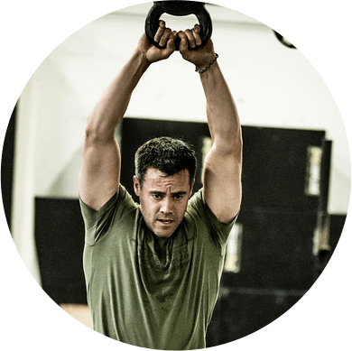

THE RIGHT REPETITION, THE RIGHT TO REPRESENT
THE REPCORD
The RepCord
CrossFit has inspired lots of high intensity training programs -- do the work as fast
as possible and to do it with a group of people.
Intense physical work and community support go hand in hand to create an
intensely addictive physical and emotional feedback loop.
The intensity of the workouts makes it difficult to keep accurate track of rounds or
repetitions.
The RepCord is a simple bracelet you can wear during a workout. You move soft
silicon, numbered beads to keep track of a completed rounds or repetitions. After
the workout, athletes can wear the bracelet to as a subtle you are part of a team.
THE REPCORD - a simple bracelet of numbered beads you slide to easily keep
accurate track of the reps or rounds without interrupting the flow of the workout.
It's right on your wrist - slide a bead and keep working.
OUR STORY
CHIPS AND CHALK
Just try to keep track while you rep out front squats and with your heart rate at 190.
Athletes use poker chips or chalk to keep track but they add time to your workout.
The RepCord is fastened around your wrist. Wear it loose all day and when its
time to workout, just tighten it down and move a bead over for each rep or round
completed -- track progress on your wrist, and you are ready for the next round.
TOUGH STUFF
The patent-pending RepCord is made out of water-resistant 550 military grade
parachute cord with specially designed beads poured from silicone rubber. We
numbered the beads to make it easier to know where you stand at a glance.

Contact Us
MY BOX RULES
After the workout the RepCord stays on our wrist as a subtle reminder that we did
it together. Everyone has one and we all know who we are. If you wear one you
understand. If you don't understand - don't sweat it - you don't need one.